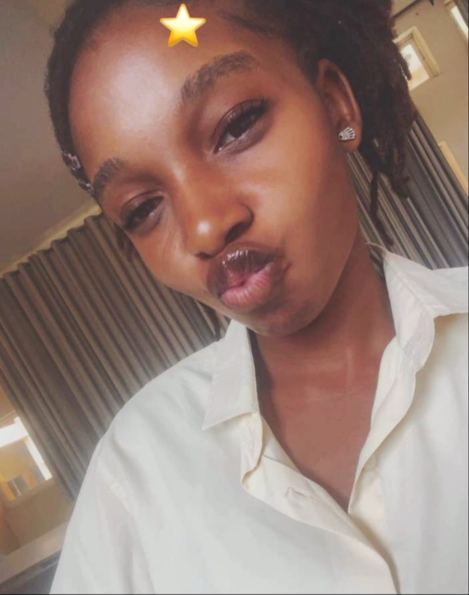

Your Birthday has arrived, my love! Here is my final poem to you:
If I were to name life, I would call it a tapestry, woven with threads I never see until I traced them backward. Threads of friendship, steady and sure, quietly holding the fabric together when storms tried to tear it apart. Threads of kinship, roots dug deep into the soil of memory, reminding me that no matter how far I wander, I am tethered to something greater than myself. Then there is love, not a single thread, but the golden one, shimmering, radiant, weaving itself through every corner, sometimes delicate, sometimes unyielding, always changing what it touches. It entered softly, yet rearranged the whole design of who I thought I was. But where there is love, there is yearning, for love is both presence and absence. Yearning stretches the threads thin, pulls them across distances my heart cannot cross, yet still I reach, still hope for the hands that once held mine. Reconciliation is the mending, the act of picking up frayed edges, knotting them into something new. It does not erase the tear, but it makes it part of the design, a reminder that broken things can still be beautiful, that stories can be rewritten on the same page. Passion burns its way into the weave, a streak of crimson across the fabric, fierce and untamed. It consumes, it ignites, yet it gives the tapestry its fire, its intensity. Without passion, the pattern would dull, the colors would fade into monotony. And grief, is the shadowed thread, dark, heavy, impossible to ignore. It winds through every bright color, a reminder that even the most radiant designs carry the echo of what was lost. Yet grief, too, belongs in the weave, for without it, our light would not shine so brightly, our love would not feel so precious. This tapestry of us, stitched with laughter, stitched with tears, with choices and fate, with ruin and rebuilding, is imperfect, yet whole. It holds the lighthouse and the storm, the garden and the desolate plain, the warmth of fire and the silence of ash. And if I were asked to name what it all means, what this tapestry truly is, I would not call it friendship alone, nor kinship, nor love, nor grief. I would call it life itself, a fabric that binds me to you, you to me, and us to something eternal, something infinite.